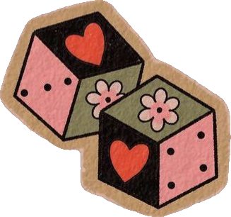
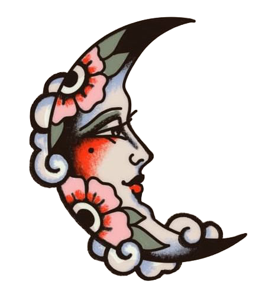
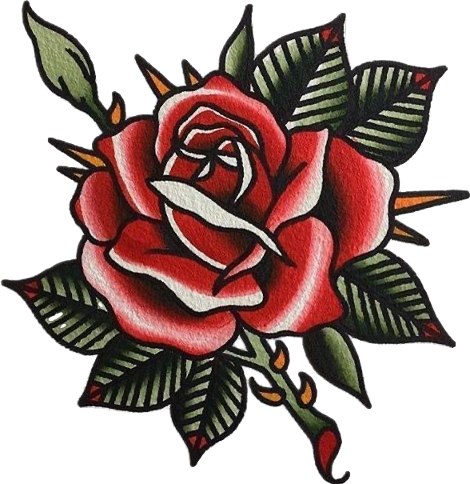
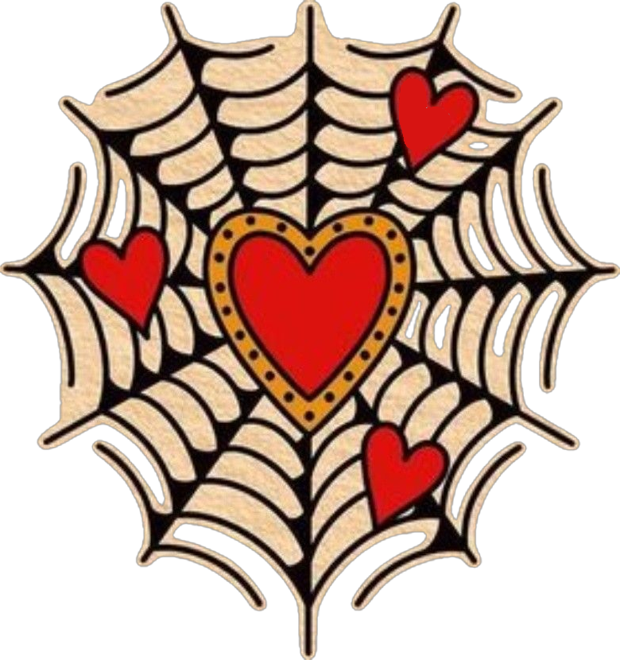
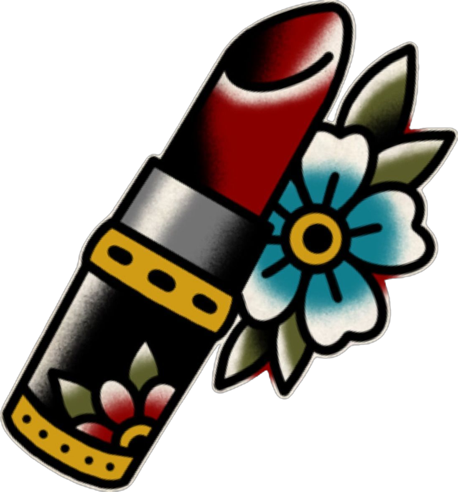
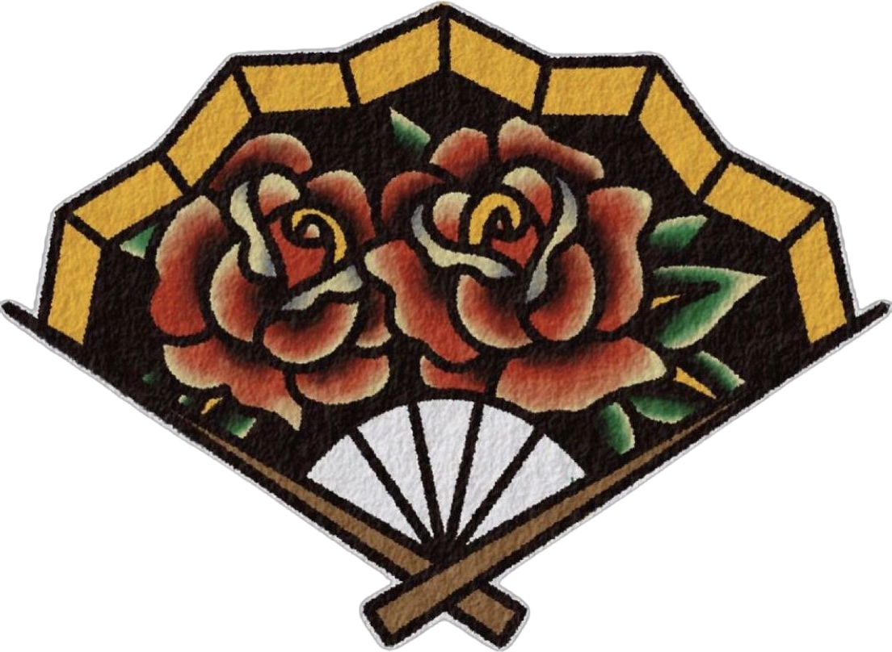
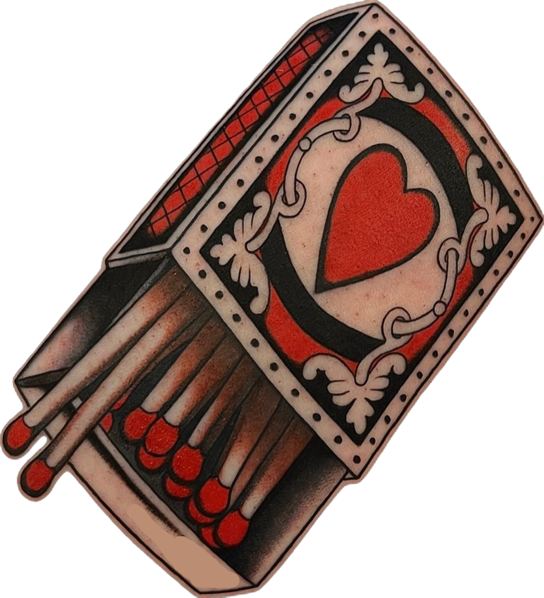
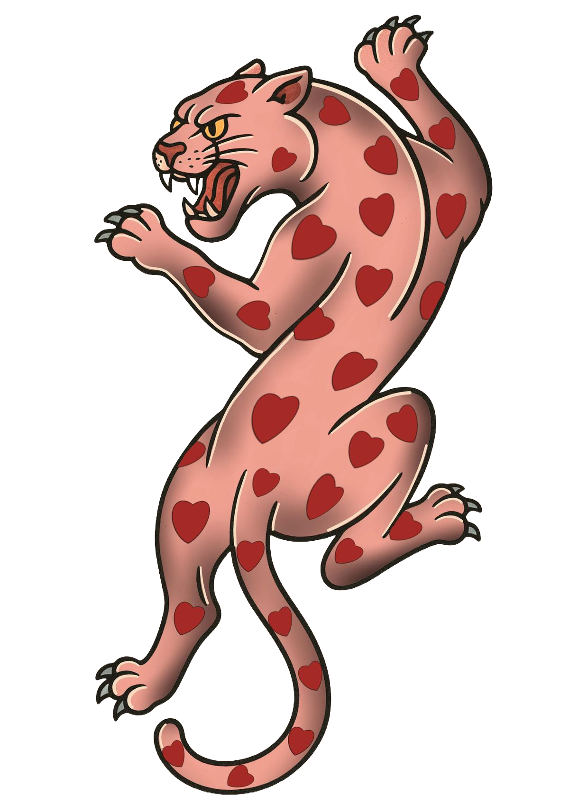
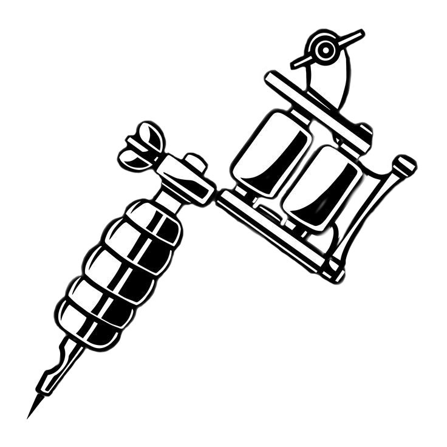

I have always been intrigued by American Traditional tattoo art. I love how unique its style is and how versatile it is with any design. It’s a form of art that I love seeing both on walls and on skin. Its bold lines, vibrant colors, and iconic imagery make it a timeless and striking visual style.
American Traditional tattoos, also known as “Old School” tattoos, originated in the late 19th century when sailors returning from the Pacific brought tattooing techniques and designs to America. These designs quickly gained popularity and became a symbol of adventure, resilience, and individuality.
In the 1930s, Norman “Sailor Jerry” Collins refined these designs, introducing bold outlines, vibrant colors, and iconic motifs such as eagles, anchors, roses, skulls, and daggers. Over the decades, American Traditional tattoos evolved alongside cultural shifts but remained true to their roots — emphasizing simplicity, durability, and symbolism.
The timeless appeal of American Traditional tattoos lies in their simplicity, symbolism, and bold aesthetic. They allow for personal storytelling while remaining classic and recognizable. Whether honoring heritage, expressing individuality, or simply celebrating the art form, these tattoos are a lasting visual statement that bridges generations of enthusiasts.








